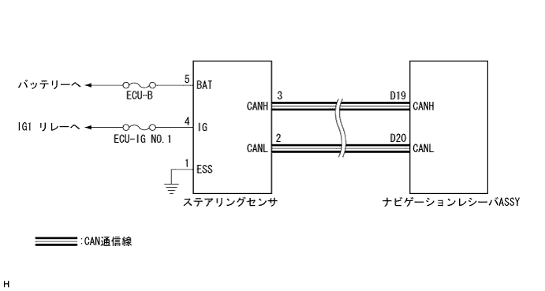

Back Guide Monitor System Estimated Course Line is not Displayed and "Guide Unavailable" is Displayed |

))| Step 1 | Inspect Wire Harness and Connector (Steering Sensor Power Source System) |
Pre-inspection Preparation
Disconnect the steering sensor connector.
Resistance Inspection
Using SST (Toyota electrical tester), measure the resistance between the connector terminals.
| Tester Connection (Terminal Symbol) | Condition | Standard |
|---|---|---|
| 1 (ESS) - Body ground | Always | Below 1 Ω |
Voltage Inspection
Using SST (Toyota electrical tester), measure the voltage between each terminal of the connector.
| Tester Connection (Terminal Symbol) | Condition | Standard |
|---|---|---|
| 4(IG) - 1(ESS) | IG ON | 11 to 14 V |
| 5(BAT) - 1(ESS) | Always | 11 to 14 V |
|
| ||||
| OK | ||
| ||